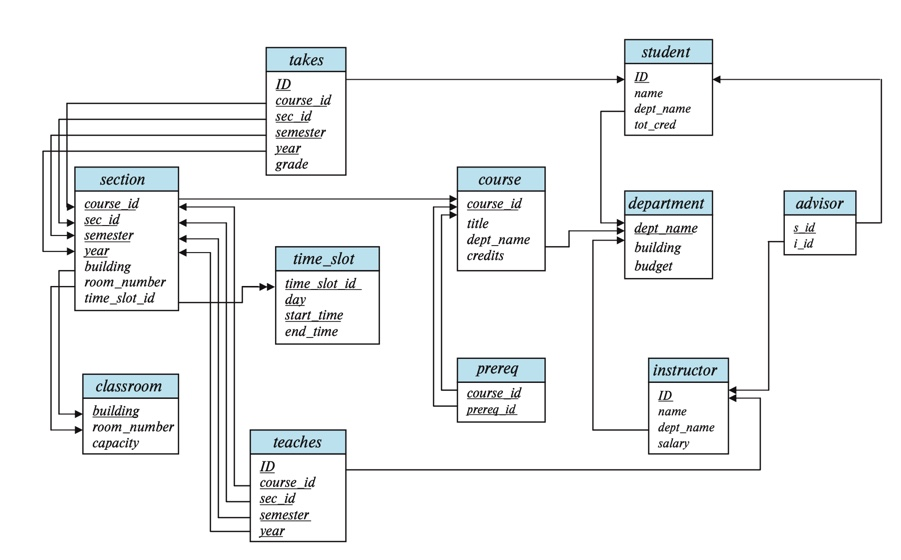
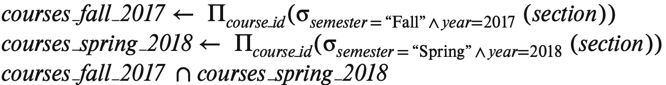
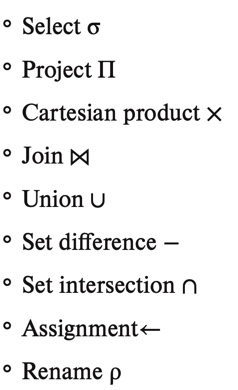

2 Introduction to the Relational Model
The relational model is the primary model for commerical data processing applications.
2.1 Structure of the Relational Databases
A relational database consits of tables
generally, a row in a table represents a relationship among a set of values
RELATION- a tableTUPLE- a rowATTRIBUTE- a column in a tableRELATIONAL INSTANCE- refers to a specific instance of a relation, or a specific set of rows- ordered or unordered does NOT matter as long as the same relations are in the set
\[\\[.1cm]\]
g. DOMAIN - set of permitted values for an attribute of a relation
Ex. the domain of salary attribute of the instructor relation is the set of all possible salaries.
NULL VALUES- signifies that a value is UNKNOWN or does not exist- best not to have null values as they will cause difficulties updating & accessing database
2.2 Database Schema
DATABASE SCHEMA- the logical design of the databaseDATABASE INSTANCE- snapshot of the data in the database at a given timeRELATIONAL SCHEMA- list of attributes & their corresponding domainsrelational instance - the value of a variable at a given time –> may change
relational schema does not change
relational instance and schema are often used interchageably
Ex. instructor may mean instructor schema or instructor instance!!!
2.3 EXCLUDED
2.4 Schema Diagrams
SCHEMA DIAGRAM- depicts a database schema, all the keys, etc.- relations are represented by BOXES w/name on top and attributes listed inside the box
- primary keys are UNDERLINED
- foreign key constraints are ARROWS from foreign key attribute of referencing relation to the primary key of the referenced table
- referential integrity constraints are TWO-HEADED ARROWS

Example of a Schema Diagram2.5 Relational Query Language
QUERY LANG.- a language in which a user request info. from databaseIMPERATIVE QUERY LANG.- user instructs the system to perform a specific sequence of operations on the database to compute the desired resultsFUNCTIONAL QUERY LANG.- the computation is expressed as the evaluation of functions that may operate on the data or results of other functionsDECLARATIVE QUERY LANG.- user describes the desired info. w/o giving a specific instructions or function calls for obtaining the info.- desired info. is usually expressed in some form of mathematical logic
Usually query lang. such as SQL have elements of all 3 approaches.
2.6 Relational Algebra
RELATIONAL ALGEBRA- set of operations that take one or two relations as input & produce a new relationunary operations - operate on ONE relation
Ex. select, project, & rename operationsbinary operations - operate on a pair of relations
Ex. cartesian product, union, set-difference
Binary and unary operations can be combined in relational algebra expressions.
\[\\[.1cm]\]
SELECT- choose rows that satisfy a given predicate- denoted by \(\sigma\) & predicate as a subscript to \(\sigma\)
- relation is in parenthese after \(\sigma\)
- Ex. \(\sigma\)dept_name=‘physics’ (instructors) selects rows of instructor table where instructor is in the Physics department
- selection allows mathematical operators
- Ex. \(\sigma\)salary>90000 (instructors)
- selction allow connectives (and, or, not)
- selection allows comparison btw 2 attributes
- Ex. \(\sigma\)dept_name=‘building’ (instructors) finds all departments whose name is the same as their building
\[\\[.1cm]\]
PROJECT- returns a table w/certain attributes left out- denoted by \(\Pi\)
- desired attributes are listed in subscript
- table argument follows in parenthese
- Ex. \(\Pi\)ID,name,salary (instructors)
- project allows operations
- Ex. \(\Pi\)ID,name,salary/12 (instructors) returns monthly salary
\[\\[.1cm]\]
CARTESIAN-PRODUCT- combines info. from 2 tables- denoted by X, a cross
\[\\[.1cm]\]
UNION- all rows that appear in either or both of 2 tables- denoted by U, union symbol
- Ex. \(\Pi\)course_ID (\(\sigma\)semester=‘Fall’^year=2017(Section)) U \(\Pi\)course_ID (\(\sigma\)semester=‘Spring’^year=2018(Section)) retunn all the courses taught in Fall 2017, Spring 2018, or both
For union to work:
both tables must have teh same arity (# of attributes)
if attributes have associated types, they must be the same for both tables
If 1 & 2 are satisfy, we call the tables compatible relations.
INTERSECTION- find rows in both tablesSET-DIFFERENCES- find rows in one table but are not in another- denoted by -
- Ex. \(\Pi\)course_ID (\(\sigma\)semester=‘Fall’^year=2017(Section)) - \(\Pi\)course_ID (\(\sigma\)semester=‘Spring’^year=2018(Section)) finds all courses taught in Fall 2017 but not in Spring 2018
\[\\[.1cm]\]
ASSIGNMENT- works like assignment in a programming lang.- denoted by backward arrow, <-
- evaluation of an assignment does NOT result in any relation being displayed to the user
- instead the result is assigned to a table variable
- assignments are TEMPORARY; assignments to permanent tables is a database MODIFICATION

Only the final line displays the result. The 2 lines before assigns query results to a temporary relation.- summary:

Relational Algebra Operators